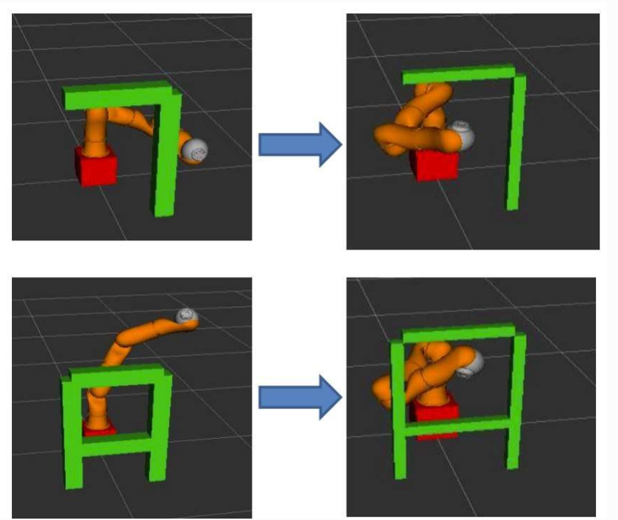

ROBOTICS / MOTION PLANNING
RRT Motion Planning & Obstacle Avoidance
Used the Rapidly-exploring Random Tree (RRT) algorithm in a ROS MoveIt simulation to plan obstacle-avoiding motion for a KUKA robotic arm.

Rapidly-exploring Random Tree (RRT)
Rapidly-exploring Random Tree (RRT) incrementally builds a tree by randomly sampling configurations in the robot's configuration space.
The starting point is the robot's initial joint configuration. The tree expands toward randomly sampled configurations, and each new connection is checked for collisions with obstacles.
RRT Algorithm Steps
- Initialize the tree at the robot's starting configuration.
- Sample a random configuration within the robot's joint limits.
- Find the nearest existing node in the tree.
- Extend the tree toward the sampled configuration by a preset distance.
- Check the new motion segment for collisions.
- Repeat until the goal is reached and reconstruct the path.
Technical Approach
A KUKA robotic arm was configured in ROS MoveIt with its joint limits, link lengths, and surrounding obstacles. Start and goal configurations were defined for the motion planning task.
Inverse kinematics was applied to obtain the desired goal configuration in joint space.
The RRT algorithm then explored possible robot configurations to generate a path toward the target while avoiding obstacles.
Simulation Results
The robot arm was able to successfully avoid obstacles and reach its destination.